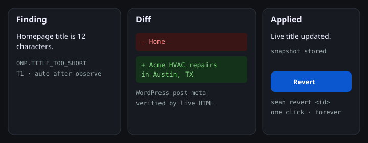

Every SEO tool tells you what's wrong. Agent Sean fixes it.
A self-hosted daemon that writes reversible diffs to WordPress, Shopify, Git, or the edge — on a schedule you set, forever.
npx agentsean

Supported surfaces
| Where the site lives | How Sean writes |
|---|---|
| WordPress | Companion plugin + Application Passwords |
| Shopify | Metafields. Theme writes refused. |
| Next.js / Git | A PR you can read |
| Squarespace / Framer / Duda | Cloudflare edge overlay, no UA branch |
Prior art
OpenSEO proved an open-source SEO platform could work. Agent Sean is the execution layer that writes reversible diffs to your actual site — not a fork of OpenSEO, and not a report that stops at the finding.
What Sean does not do
Stakeholder negotiation, strategy arguments, and deciding whether a business should want the traffic. Tools that pretend otherwise are the ones people stop trusting.